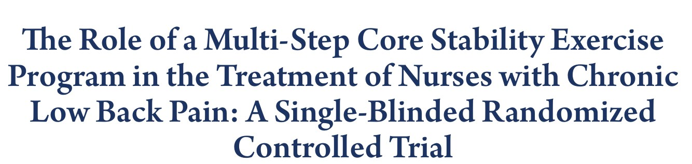
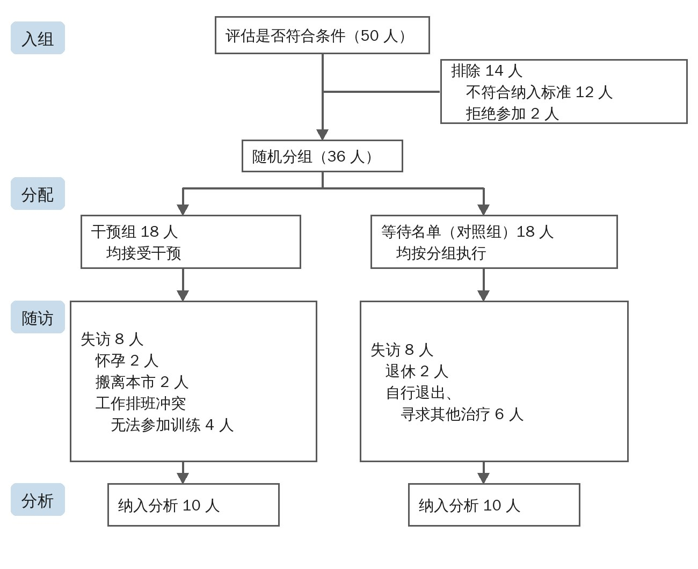
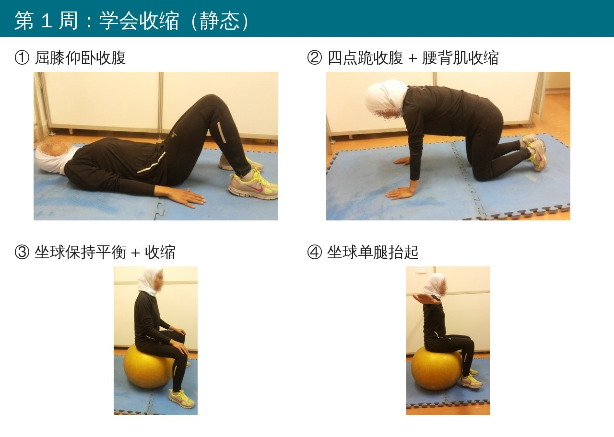
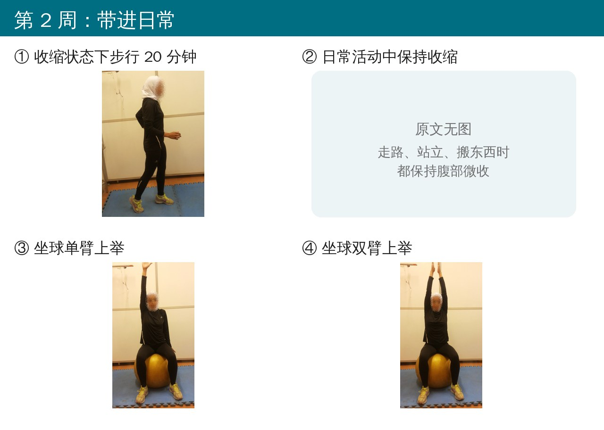
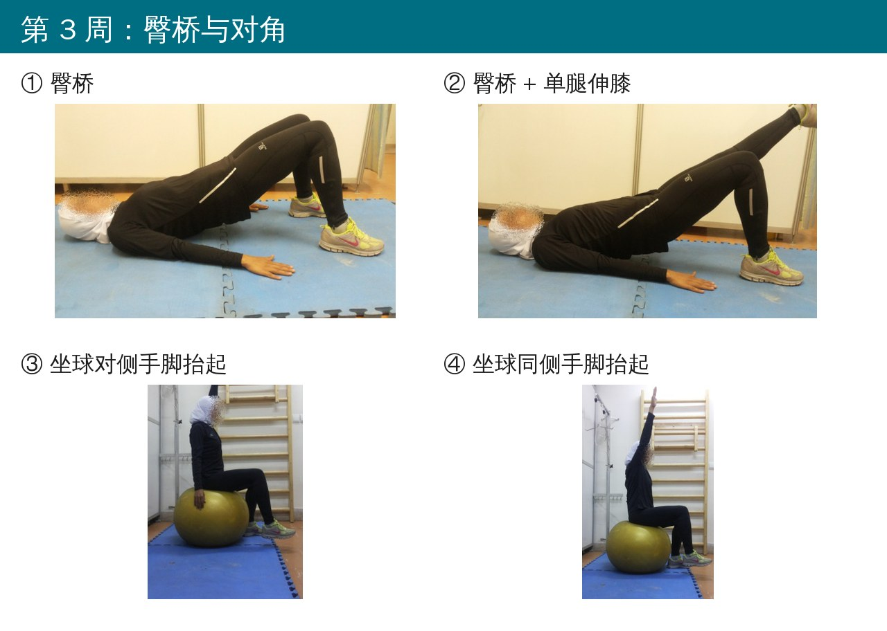
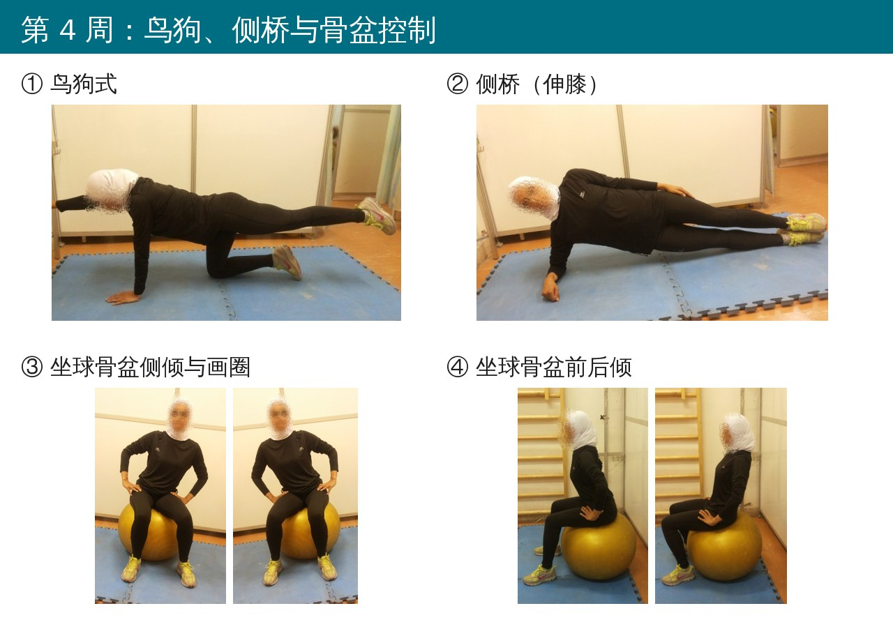
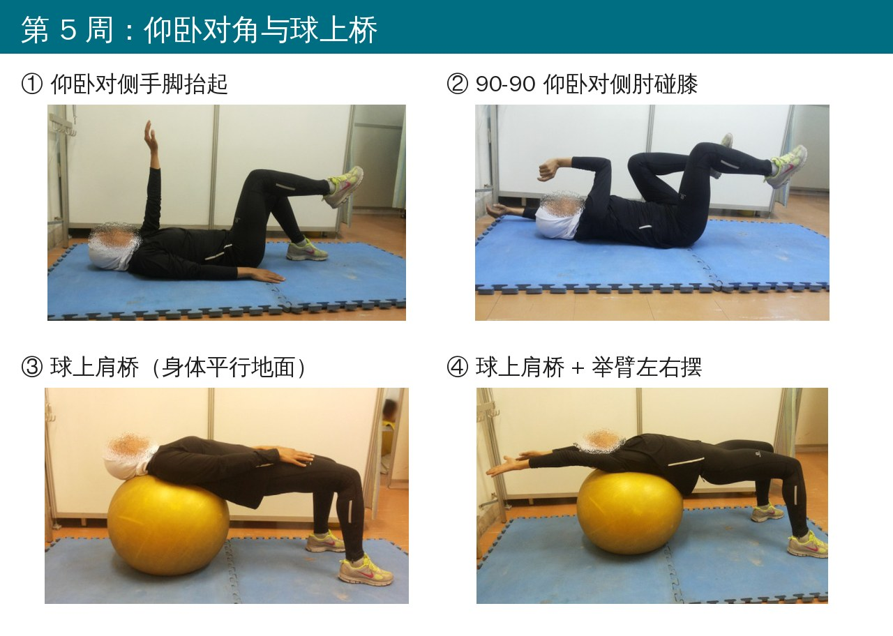
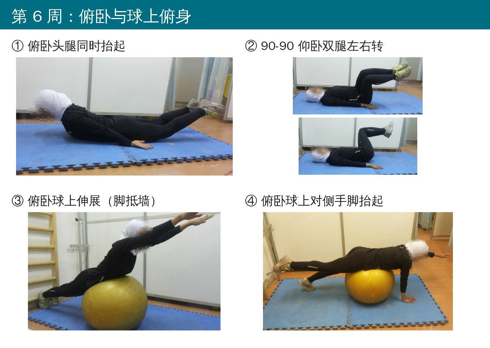
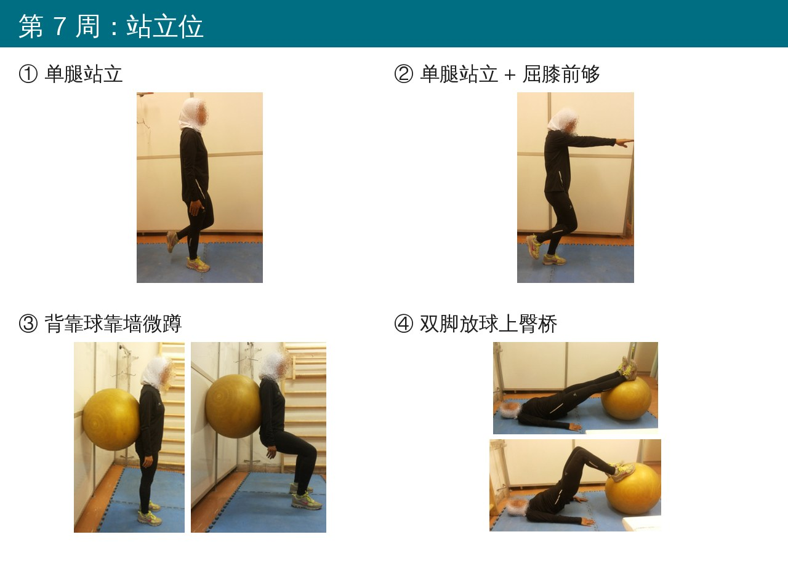
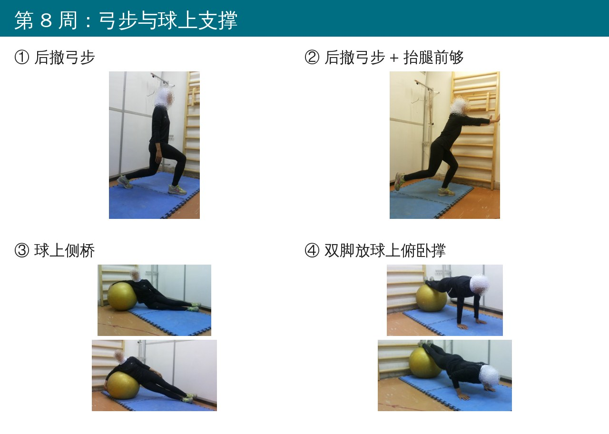

🔖原文标题（Asian Spine J 2018;12(3):490-502，开放获取）
📚 文献信息
▪ Noormohammadpour P, Kordi M, Mansournia MA, Akbari-Fakhrabadi M, Kordi R. The Role of a Multi-Step Core Stability Exercise Program in the Treatment of Nurses with Chronic Low Back Pain: A Single-Blinded Randomized Controlled Trial. Asian Spine J. 2018;12(3):490-502.
▪ 作者来自伊朗德黑兰医科大学运动医学研究中心
▪ 单盲随机对照试验，伊朗临床试验注册 IRCT138903314231N1；DOI：10.4184/asj.2018.12.3.490
医护人员腰痛的年患病率高达 50%～77%，其中护士最高。翻身、搬抬、转运病人这些“病人搬运”动作，是医护腰痛最主要的危险因素（比值比 1.6）。
核心稳定训练在普通腰痛人群里用得很多，但专门给护士做、而且按周一步步进阶、整套动作都公开的研究并不多。这篇伊朗的随机对照试验就给慢性腰痛的女护士设计了一套 8 周方案，看看疼痛、功能、生活质量和腹壁肌肉厚度会不会变。
先说结论：8 周后，训练组的疼痛、功能障碍和生活质量都明显改善，对照组基本没变。但脱落率接近一半，结果要打点折扣。
• 对象：4 家大学附属医院的 36 名女护士，18～55 岁、护龄至少 1 年，近 6 个月内非特异性腰痛至少 3 个月，疼痛在最下面肋骨到臀横纹之间
• 排除：脊柱外伤、脊柱或腹部手术史、系统性疾病、脊柱畸形、腹壁疝、近 6 个月做过核心训练；有大小便失禁、麻木、肢体瘫痪等严重神经症状或怀孕的也排除
• 随机分成两组各 18 人：训练组做 8 周核心稳定训练；对照组进入等待名单，不做任何训练（试验结束后再教）
• 评估：疼痛（VAS，0～100）、功能障碍（Roland-Morris 问卷 RDQ，0～24）、生活质量（SF-36）、超声测两侧腹外斜肌、腹内斜肌和腹横肌厚度（静息和腹部收紧动作时）
• 超声评估者不知道分组，统计人员也设盲；所有超声都在进食 4 小时后测，避免吃饭影响腹肌厚度

🔖原文图 1 受试者流程（中文重绘）
问题在于脱落太多：两组各走了 8 人，最后每组只剩 10 人。训练组有 4 人是因为排班冲突来不了，对照组有 6 人自己去找别的治疗了。
方案的思路是“先学会收，再带着收去动”：第一周学习腹部收紧（ADiM，把肚脐往脊柱方向收）和腰部多裂肌收缩，在仰卧、四点跪这类静态姿势下保持；之后每周加入新动作，从地面到瑞士球，从躺着到坐、到站，最后到弓步和球上支撑。
• 每周 4 个新动作：2 个地面 + 2 个瑞士球（瑞士球能更多地激活躯干肌）
• 每个动作每天 3 组（早、中、晚）× 10 次，每次保持 10 秒；次数和保持时间可以按个人能力调整
• 每周到中心来 1 次，在治疗师指导下学新动作，然后回家自己练，配有图文手册；治疗师每周中间打电话督促一次
• 强度按耐受逐步增加，引起疼痛的动作就不做
• 第一次课还会讲解核心肌群和腰痛的关系，以及训练对减少疼痛和复发的作用
下面是原文附录的全部动作，每个动作都要在腹部收紧 + 腰背肌收缩的状态下完成：

🔖第 1 周：学会收缩
• ① 屈膝仰卧，腹部收紧保持 10 秒，放松，重复 10 次
• ② 四点跪，保持腰部自然曲度，腹部收紧同时收缩腰背肌，保持 10 秒
• ③ 坐在球上保持平衡，腰背挺直，收缩保持 10 秒
• ④ 坐球，双臂稍外展，一条腿抬起保持 10 秒，换腿

🔖第 2 周：带进日常
• ① 收着腹部步行，每天 20 分钟，几分钟后能行的话可以改慢跑
• ② 日常活动中也保持收缩（原文无图）
• ③ 坐球收缩，单臂上举保持 10 秒，两侧轮流
• ④ 坐球收缩，双臂上举保持 10 秒
第 2 周就把收缩带进走路和日常活动，这一点对需要整天站立、搬抬的护士特别有意义。

🔖第 3 周：臀桥与对角
• ① 臀桥：屈膝仰卧，收缩后抬臀保持 10 秒
• ② 臀桥基础上伸直一侧膝，保持 10 秒，换边
• ③ 坐球，对侧手脚（左腿 + 右臂）同时抬起，保持 10 秒
• ④ 坐球，同侧手脚（左腿 + 左臂）同时抬起，保持 10 秒

🔖第 4 周：鸟狗、侧桥与骨盆控制
• ① 鸟狗式：四点跪，保持收缩，伸直左腿和右臂保持 10 秒，换边
• ② 侧桥：侧卧伸膝，抬起臀部直到躯干、背部和膝成一条线，保持 10 秒
• ③ 坐球，骨盆左右侧倾，再顺时针、逆时针画圈
• ④ 坐球，骨盆前后倾

🔖第 5 周：仰卧对角与球上桥
• ① 屈膝仰卧，对侧手脚（左臂 + 右腿）同时抬离地面，保持 10 秒
• ② 仰卧屈髋屈膝 90-90，双臂过头，右肘碰左膝、同时伸直右膝，两侧交替
• ③ 坐球后向前走，让球滚到肩背下，身体与地面平行，保持 10 秒
• ④ 同上，再把双臂举过头，在球上左右晃

🔖第 6 周：俯卧与球上俯身
• ① 俯卧，头和双腿同时抬离地面，保持 10 秒
• ② 仰卧 90-90，双腿一起左右转
• ③ 腹部趴在球上、脚尖抵墙，伸直膝和手臂让身体成一直线，保持 10 秒
• ④ 腹部趴在球上、双手撑地，抬起右腿和左臂，保持 10 秒，换边

🔖第 7 周：站立位
• ① 单腿站立保持 10 秒
• ② 单腿站，支撑腿微屈膝，对侧手臂向前够，保持 10 秒
• ③ 背后放一个球靠墙，慢慢屈膝下蹲，保持 10 秒
• ④ 仰卧双脚放球上，抬臀保持 10 秒

🔖第 8 周：弓步与球上支撑
• ① 后撤弓步保持 10 秒，换边
• ② 后撤弓步后，后腿离地、双臂向前够，保持 10 秒
• ③ 侧身靠在球上，抬臀伸膝让身体成一直线，保持 10 秒
• ④ 双脚放球上、双手撑地，做俯卧撑
表 1 两组基线情况
| 指标 | 训练组（n=10） | 对照组（n=10） | P 值 |
|---|---|---|---|
| 年龄（岁） | 43.3 ± 7.5 | 41.3 ± 6.4 | 0.68 |
| 体重（kg） | 63.3 ± 4.7 | 63.5 ± 5.8 | 0.34 |
| 身高（cm） | 162.5 ± 6.9 | 161.5 ± 3.7 | 0.30 |
| BMI（kg/m²） | 24.0 ± 1.7 | 24.3 ± 2.1 | 0.54 |
| 病程（月） | 18.2 ± 6.4 | 16.4 ± 5.9 | 0.94 |
表 2 疼痛、功能障碍和生活质量
| 指标 | 训练组 前 | 训练组 后 | 对照组 前 | 对照组 后 | 组间 P 值 |
|---|---|---|---|---|---|
| 当前疼痛 VAS | 38.4 ± 21.7 | 4.0 ± 5.4 | 36.2 ± 27.2 | 25.2 ± 17.7 | ＜0.001 |
| 近一周疼痛 VAS | 51.8 ± 24.1 | 12.4 ± 13.5 | 44.2 ± 26.5 | 39.4 ± 20.9 | 0.001 |
| RDQ 功能障碍 | 7.8 ± 3.4 | 1.7 ± 2.4 | 9.5 ± 4.9 | 7.9 ± 3.3 | ＜0.001 |
| SF-36 生理功能 | 68.5 ± 14.3 | 86.0 ± 11.5 | 68.0 ± 19.6 | 65.5 ± 19.9 | 0.002 |
| SF-36 生理角色 | 40.0 ± 29.3 | 95.0 ± 10.5 | 50.0 ± 42.5 | 65.0 ± 41.2 | 0.007 |
| SF-36 躯体疼痛 | 52.8 ± 16.4 | 85.6 ± 15.8 | 55.0 ± 23.3 | 59.0 ± 15.0 | ＜0.001 |
| SF-36 总体健康 | 69.5 ± 14.6 | 83.0 ± 6.7 | 54.5 ± 25.1 | 57.5 ± 22.7 | 0.002 |
| SF-36 活力 | 45.5 ± 13.2 | 72.5 ± 13.6 | 49.8 ± 14.7 | 51.5 ± 21.2 | 0.016 |
| SF-36 社会功能 | 56.3 ± 13.5 | 82.5 ± 21.4 | 68.8 ± 20.6 | 62.5 ± 22.0 | 0.03 |
| SF-36 情感角色 | 40.0 ± 40.9 | 66.7 ± 47.1 | 83.3 ± 28.3 | 60.0 ± 40.9 | 0.41 |
| SF-36 精神健康 | 66.4 ± 16.6 | 80.4 ± 15.7 | 68.4 ± 15.6 | 64.4 ± 11.8 | 0.001 |
🔖组间比较为协方差分析，校正了年龄、体重和基线值；SF-36 分数越高越好
• 疼痛：训练组近一周疼痛降了约 39 分（满分 100），当前疼痛降了约 34 分，都超过最小临床重要差异（15 分）；对照组基本没变
• 功能障碍：RDQ 从 7.8 降到 1.7，降了 6.1 分，超过 5 分的最小临床重要差异
• 生活质量：SF-36 八个维度里，除了“情感角色”，其余全部比对照组改善更多
表 3 超声测腹壁肌肉厚度（mm）
| 状态 | 肌肉 | 侧别 | 训练组 前 | 训练组 后 | 对照组 前 | 对照组 后 | 组间 P 值 |
|---|---|---|---|---|---|---|---|
| 静息 | 腹外斜肌 | 右 | 4.3 ± 1.3 | 4.4 ± 1.3 | 4.4 ± 1.4 | 4.4 ± 1.3 | 0.26 |
| 左 | 4.4 ± 1.3 | 4.4 ± 1.4 | 4.4 ± 1.3 | 4.4 ± 1.3 | 0.59 | ||
| 腹内斜肌 | 右 | 4.9 ± 1.5 | 4.9 ± 1.5 | 4.9 ± 1.6 | 4.9 ± 1.7 | 0.30 | |
| 左 | 4.8 ± 1.6 | 4.8 ± 1.5 | 4.8 ± 1.5 | 4.9 ± 1.7 | 0.78 | ||
| 腹横肌 | 右 | 2.4 ± 0.8 | 2.4 ± 0.8 | 2.3 ± 0.8 | 2.2 ± 0.8 | 0.23 | |
| 左 | 2.4 ± 0.9 | 2.3 ± 0.8 | 2.3 ± 0.7 | 2.3 ± 0.8 | 0.12 | ||
| 收紧时 | 腹外斜肌 | 右 | 5.1 ± 1.5 | 5.9 ± 1.7 | 5.1 ± 1.7 | 5.1 ± 1.6 | ＜0.001 |
| 左 | 5.1 ± 1.6 | 6.0 ± 1.8 | 5.0 ± 1.6 | 5.1 ± 1.5 | ＜0.001 | ||
| 腹内斜肌 | 右 | 5.7 ± 1.6 | 6.2 ± 1.5 | 5.9 ± 1.8 | 5.9 ± 1.7 | 0.001 | |
| 左 | 5.7 ± 1.5 | 6.3 ± 1.4 | 5.8 ± 1.7 | 5.8 ± 1.8 | 0.009 | ||
| 腹横肌 | 右 | 2.9 ± 0.7 | 3.5 ± 0.9 | 2.9 ± 0.8 | 3.0 ± 0.8 | ＜0.001 | |
| 左 | 3.0 ± 0.7 | 3.5 ± 0.8 | 3.1 ± 0.8 | 3.1 ± 0.7 | ＜0.001 |
肌肉厚度这部分很有意思：静息时三块肌肉都没变，但做腹部收紧时，三块肌肉两侧都明显变厚。也就是说，8 周练出来的不是“肌肉长大了”，而是收缩时能调动得更好——这和核心稳定训练“重建控制”的目标是吻合的。
• 脱落率 44%：36 人只剩 20 人。作者说用了意向性分析，但实际只分析了留下来的人，这其实是按方案分析。尤其对照组有 6 人“去找别的治疗”——很可能是疼得厉害的人走了，结果容易被高估
• 对照组什么都没做：只是等待名单，没有任何注意力或安慰剂对照。训练组每周见治疗师、每周接电话，这些关注本身就可能带来改善
• 样本小，全是女性、全是伊朗的护士，只随访到训练刚结束，长期效果和复发率都不知道
• 原文写的样本量计算按 40% 脱落率设计，实际脱落率更高，检验效能可能不足
• 超声只在屈膝仰卧位测，没有在站立或功能姿势下测
• “情感角色”维度对照组基线明显高于训练组（83.3 对 40.0），两组起点差距很大
• 原文有些小错：页码标注写成 498-502（实际 490-502）；摘要写 p＜0.005，正文表格有的 P 值是 0.016、0.03；SF-36 的最小临床重要差异用的“30%”没有给出依据
这套方案最大的优点是简单、在家就能练、只需要一个瑞士球，对护士这种排班不固定、很难每周来好几次的人群很友好。每周只学 4 个新动作，第 2 周就把腹部收紧带进走路和日常工作——在病房里翻身、搬抬病人时也收着，这可能比单纯在垫子上练更实用。
临床上使用时，可以把它当作一个8 周的进阶框架：先确认患者能在仰卧位正确收紧腹部（有条件可以用超声或压力反馈仪看一下），再按周往下推进；哪一步引起疼痛就停在上一步。至于效果有多大，这篇的数字可能偏乐观，但方向是对的。
欢迎关注悦美力公众号，获取更多物理治疗的专业知识！
📄参考文献：
Noormohammadpour P, Kordi M, Mansournia MA, Akbari-Fakhrabadi M, Kordi R. The Role of a Multi-Step Core Stability Exercise Program in the Treatment of Nurses with Chronic Low Back Pain: A Single-Blinded Randomized Controlled Trial. Asian Spine J. 2018;12(3):490-502. doi:10.4184/asj.2018.12.3.490
原文以 CC BY-NC 4.0 协议开放获取（仅限非商业使用）。动作照片来自原文附录 1（人脸原文已模糊），流程图为编者中文重绘，仅用于学术交流。